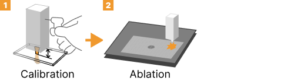

Single-sided
Single-sided carving is the most basic technique where the design is cut on one side only. This approach is suitable for simpler designs and provides a straightforward approach to creating 3D shapes through laser cutting on a single face of the material.

Single-sided Carving
Process
- Import Model: Import the model into the design software.
- Generate Front File: The design software will generate the cutting file for the front side. Ensure the bottom-left corner of the front shape is positioned 10mm away from the XY axis.
- Output Cutting File: Export the cutting file in DXF or other supported formats.
- Cutting Process: Load the material into the laser cutter and cut using the generated file.
- Completion: After cutting, you will have a carved shape ready for activation.

Single-sided Process